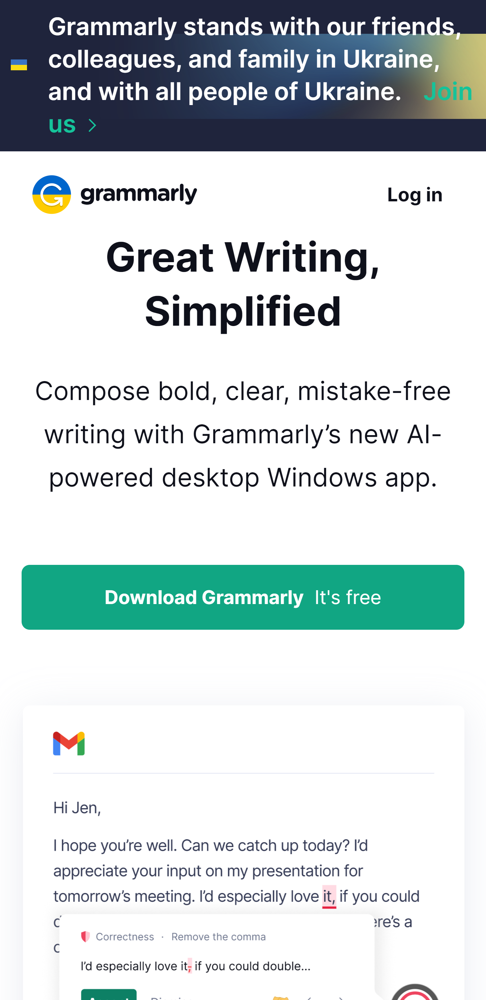

Design Principles Document
R. Ismael Rojas
Visual Hierarchy
Grammarly
https://www.grammarly.com Grammarly gives a good example of using a Visual Hierarchy because they set the title of the enterprice first and then a brief explanation about what is the application's use. There is no far place to look for the download button, becuase it's right there at the reach of the user's click. Also there is an GIF example about what the app can do in a website. So, for me, it is a delight to see that orderly way to see that Hierarchy. Also it hightlights with a blue background its support for Ukraine at the begginging, as websites do to indicate an announcement at the top ot the site.
White Space and Clean Design
Khan Academy
https://en.khanacademy.org.png)
Khan Academy has lots of white spaces which helps to make a comfortable welcome. Also, if we scroll down, we'll see images and text below them with a sufficient space to make things clear, don't overwelm users with content and give general overview about the organization and its benefits.
Alignment
Bots
https://bots.com.ar.png)
This screenshot that I took may not be in the begginging. I consider it is also a matter of the entire website not only the starting point of the visit. So scrolling a little bit you'll notice this images. Looking in a computer they look from left to right. and in the mobile they look also aligned: developers had that in mind. That type of alignment may look simple, but it's one of the basic things that we have to take care in order to make the visit easier to the users and feel comfortable.